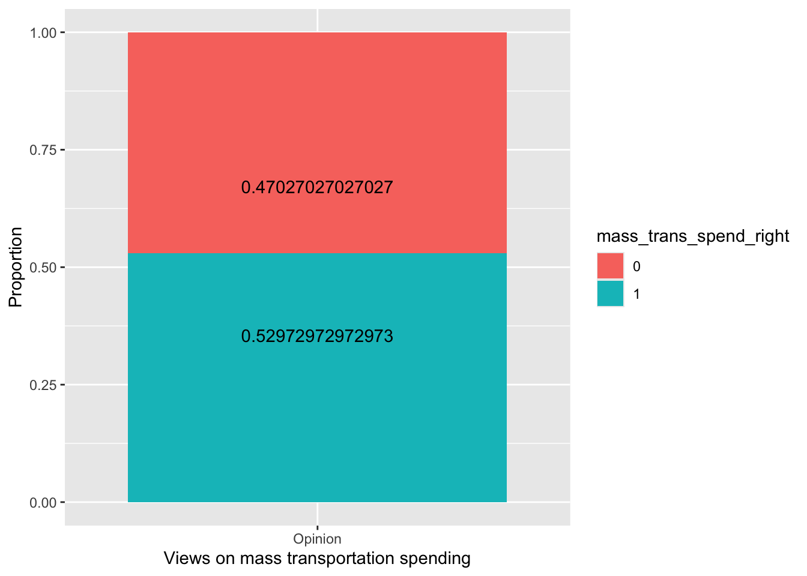
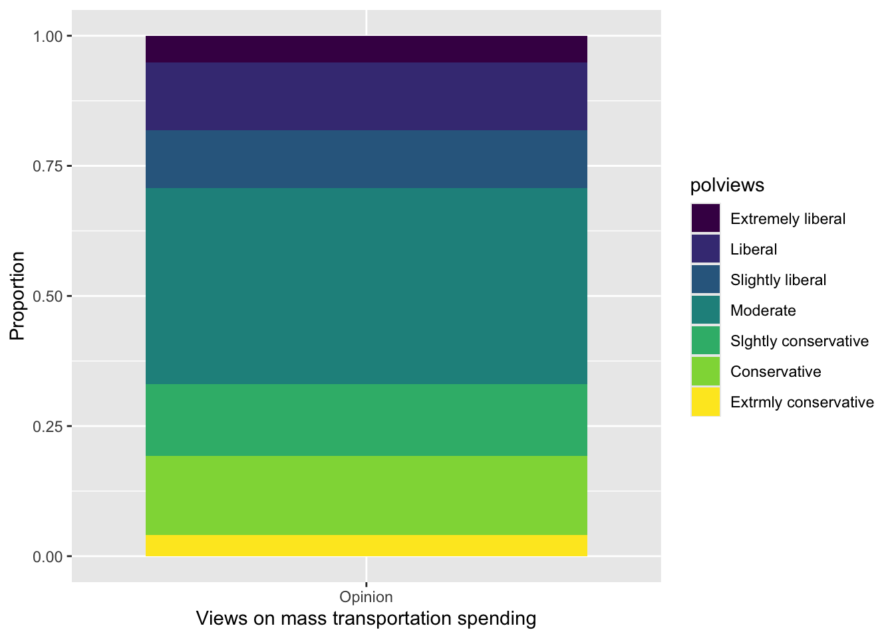
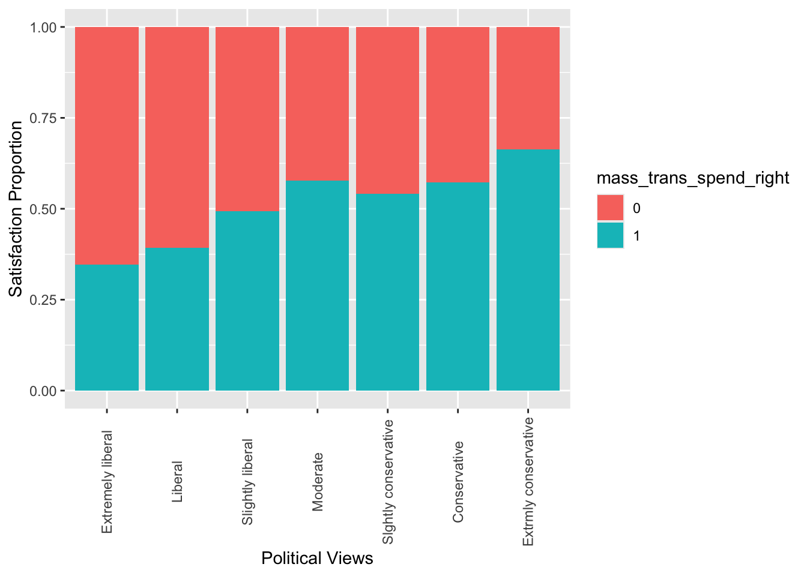
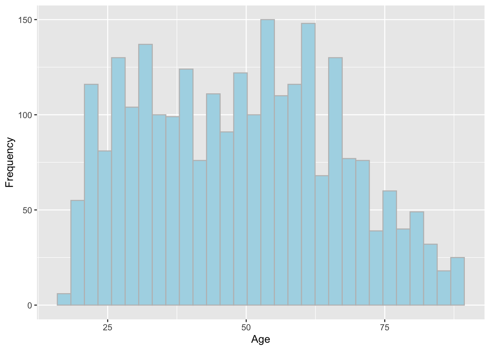
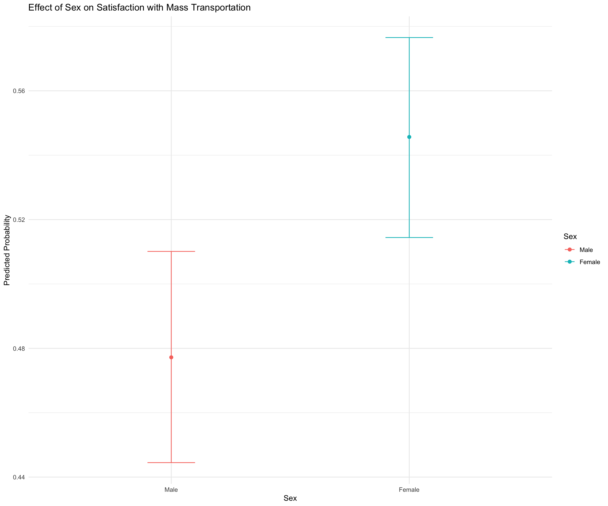
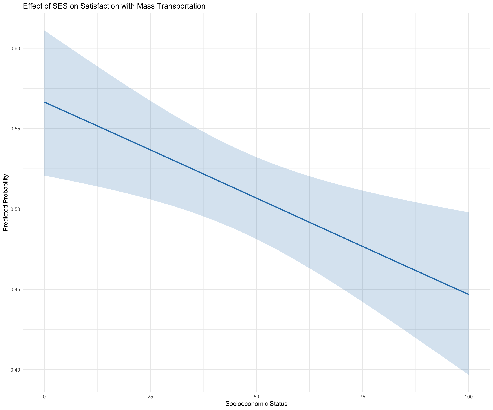
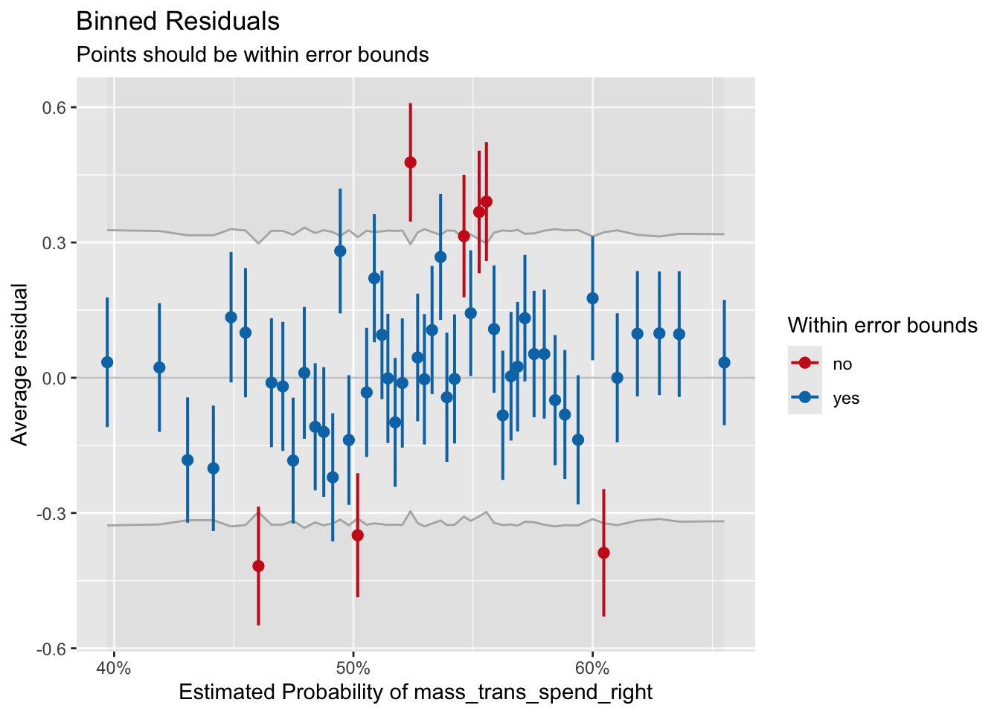
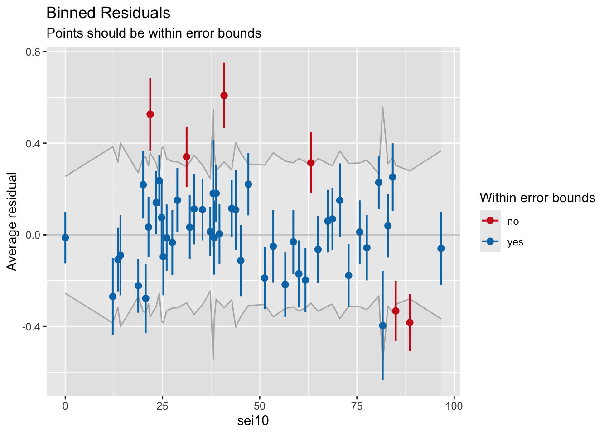
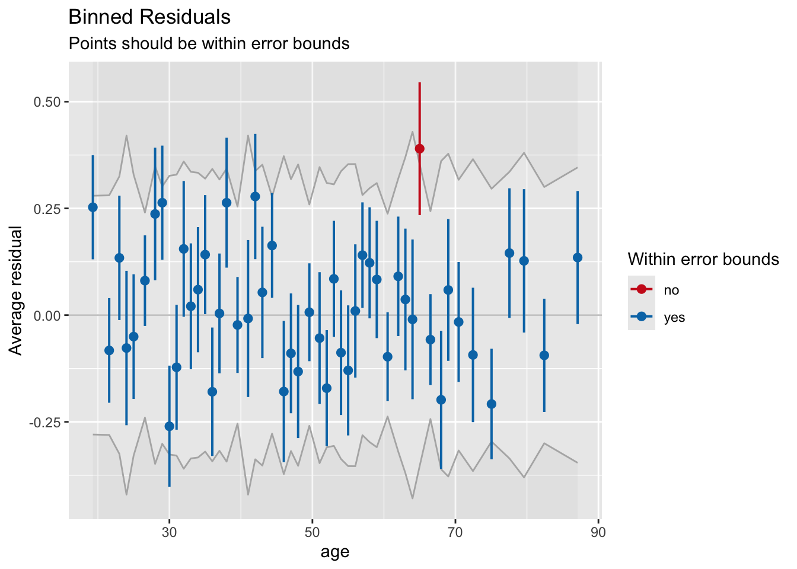
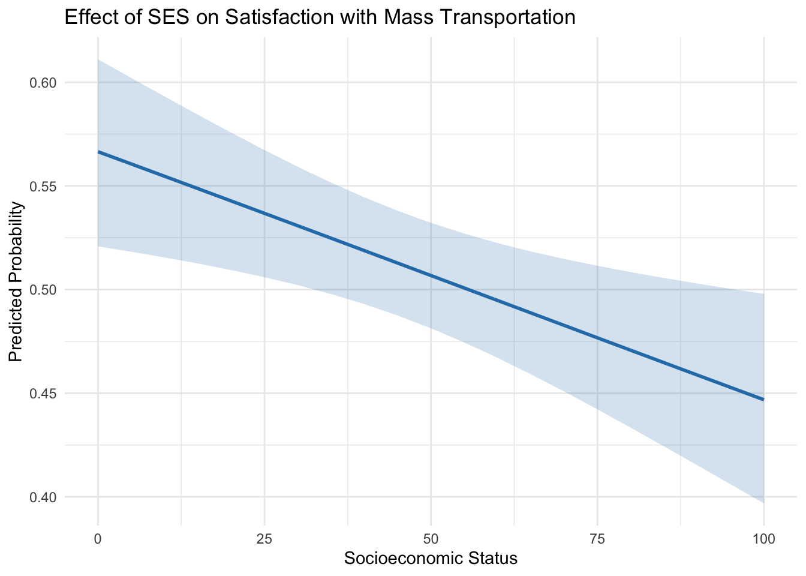

Code
library(dplyr)
library(ggplot2)
library(ggrepel)
library(readr)
library(tidyr)
library(knitr)
library(easystats)
library(broom)
library(emmeans)
library(marginaleffects)
library(performance)
library(arm)
library(modelsummary)Assignment requirements:
If you are using Github (recommended), make sure to commit and push your work to GitHub regularly, at least after each exercise. Write short and informative commit messages, and share the link to your assignment with me. If not, you can also send me the rmd & rendered file via Canvas.
In this assignment, you will not need to code from scratch. Rather, you’ll need to fill in code where needed. This assignment has a logisitic regression implementation for a scenario from EDA down to model comparison (and would be useful for whenever you may encounter such a situation in the future).
I want the assignments to begin reflecting a bit more of how you’d be doing things on your own, where you have some prior knowledge and you figure other things out (by referring to documentation, etc.) . In addition to the rmd, I also want you to submit to me notes of anything new that you learn while finishing the assignment. And any pain-points, and we’ll discuss more.
Note:
If you are fitting a model, display the model output in a neatly formatted table. (The gt tidy and kable functions can help!). Modelsummary also looks good(https://vincentarelbundock.github.io/modelsummary/articles/modelsummary.html)
Make sure that your plots are clearly labeled – for all axes, titles, etc.
Let’s begin by making a binary variable for respondents’ views on spending on mass transportation. Create a new variable that is equal to “1” if a respondent said spending on mass transportation is about right and “0” otherwise. Then plot the proportion of the response variable, using informative labels for each category.
library(dplyr)
library(ggplot2)
library(ggrepel)
library(readr)
library(tidyr)
library(knitr)
library(easystats)
library(broom)
library(emmeans)
library(marginaleffects)
library(performance)
library(arm)
library(modelsummary)# load data
data <- read.csv("gss2016.csv")Fill in the “____” below to encode the binary variable
data <- data %>%
mutate(mass_trans_spend_right = ifelse(natmass=="About right", 1, 0))#Get proportions
mass_spend_summary <- data %>%
count(mass_trans_spend_right) %>%
mutate(proportion = n / sum(n))
#Look at the dataframe structure. And make sure it's in a format that you can use for plotting.
#Change structure if neederd
mass_spend_long <- mass_spend_summary %>% mutate(opinion="Opinion")
#Factorise for plot
mass_spend_long$mass_trans_spend_right <- as.factor(mass_spend_long$mass_trans_spend_right)
#Make plot
#Hint: geom_bar lets you make stacked bar charts
ggplot(mass_spend_long, aes(x = opinion, y = proportion, fill = mass_trans_spend_right)) +
geom_bar(stat='identity') +
geom_text(aes(label=proportion),
vjust=ifelse(mass_spend_long$mass_trans_spend_right==0, -7, 7)
) +
labs(x="Views on mass transportation spending", y="Proportion")
Recode
polviewsso it is a factor with levels that are in an order that is consistent with question on the survey. Note how the categories are spelled in the data.
data <- data %>%
mutate(polviews = factor(polviews,
levels = c("Extremely liberal","Liberal", "Slightly liberal", "Moderate", "Slghtly conservative", "Conservative", "Extrmly conservative"),
ordered = TRUE))Make a plot of the distribution of
polviews
#Get proportions, format, and produce a plot like you did previously for
mass_spend_summary <- data %>%
count(polviews) %>%
mutate(proportion = n / sum(n))
#Look at the dataframe structure. And make sure it's in a format that you can use for plotting.
#Change structure if neederd
mass_spend_long <- mass_spend_summary %>% mutate(opinion="Opinion")
#Make plot
#Hint: geom_bar lets you make stacked bar charts
ggplot(mass_spend_long, aes(x = opinion, y = proportion, fill = polviews)) +
geom_bar(stat='identity') +
labs(x="Views on mass transportation spending", y="Proportion")
Which political view occurs most frequently in this data set?
Moderate occurs most frequently.
Make a plot displaying the relationship between satisfaction with mass transportation spending and political views. Use the plot to describe the relationship the two variables.
mass_spend_summary <- data %>%
count(polviews, mass_trans_spend_right) %>%
mutate(proportion = n / sum(n))
mass_spend_summary$mass_trans_spend_right <- as.factor(mass_spend_summary$mass_trans_spend_right)
ggplot(mass_spend_summary, aes(x = polviews, y = proportion, fill = mass_trans_spend_right)) +
geom_bar(stat='identity', position='fill') +
theme(axis.text.x = element_text(angle = 90, vjust = 0.5)) +
labs(x="Political Views", y="Satisfaction Proportion")
The more conservative one’s political views are the more they think the amount of spending on mass transportation is correct.
Recode age so that is a numeric variable. Note: Before making the variable numeric, you will need to replace the values “89 or older” with a single value.
data <- data %>%
mutate(age = ifelse(age == "89 or older", 89, age),
age = as.numeric(age))Plot the frequency distribution of age.
ggplot(data, aes(x = age)) +
geom_histogram(bins=30, fill="lightblue", color="grey") +
labs(x="Age", y="Frequency")
Let’s start by fitting a logistic regression model with just the intercept
intercept_only_model <- glm(
mass_trans_spend_right ~ 1,
family=binomial,
data=data
)
intercept_only_model %>%
tidy() %>%
kable()| term | estimate | std.error | statistic | p.value |
|---|---|---|---|---|
| (Intercept) | 0.1190594 | 0.0393685 | 3.024229 | 0.0024927 |
Interpret the intercept in the context of the data. You can do this by converting the \(\beta_0\) parameter out of the log-odds metric to the probability metric. Make sure to include the 95% confidence intervals. Then interpret the results in a sentence or two–what is the basic thing this probability tells us about?
b0 <- coef(intercept_only_model) # get coef
b0_transformed <- exp(b0) / (1 + exp(b0)) # logistic transform
ci_lower = b0 - 1.96 * 0.0393685
ci_upper = b0 + 1.96 * 0.0393685
#transforming confidence intervals of coefficients into probabilities
p_lower = exp(ci_lower) / (1 + exp(ci_lower))
p_upper = exp(ci_upper) / (1 + exp(ci_upper))
logit_to_prob <- function(logit){
return(exp(logit) / (1 + exp(logit)))
}
logit_to_prob(coef(intercept_only_model))(Intercept)
0.5297297 logit_to_prob(confint(intercept_only_model)) 2.5 % 97.5 %
0.5104854 0.5489153 Interpretation: The converted \(\beta_0\) parameter in probability is 0.5297 (95%CI [ 0.5105, 0.5489]). This probability should just be the proportion of mass_trans_spend_right = 1 in the data.
Now let’s fit a model using the demographic factors -
age,sex,sei10- to predict the odds a person is satisfied with spending on mass transportation. Make any necessary adjustments to the variables so the intercept will have a meaningful interpretation. Neatly display the model coefficients (do not display the summary output)
#make sure that sex is a factor (i.e. to make sure R knows it's binary/categorical, and not continuous)
data = data %>%
mutate(sex=factor(sex, levels=c("Male", "Female")))
#fit with glm()
m1 <- glm(
mass_trans_spend_right ~ 1 + age + sex + sei10,
family=binomial,
data=data
)
#produce tidy output of model coefficients
m1 %>%
tidy() %>%
kable()| term | estimate | std.error | statistic | p.value |
|---|---|---|---|---|
| (Intercept) | 0.5697071 | 0.1409061 | 4.043169 | 0.0000527 |
| age | -0.0061659 | 0.0022824 | -2.701502 | 0.0069027 |
| sexFemale | 0.2557439 | 0.0798020 | 3.204732 | 0.0013519 |
| sei10 | -0.0062271 | 0.0016609 | -3.749229 | 0.0001774 |
Consider the relationship between sex and one’s opinion about spending on mass transportation. Interpret the coefficient of sex in terms of the logs odds and OR of being satisfied with spending on mass transportation. What are the predicted probabilities for males and females on support for spending on mass transportation? Please include the 95% CIs around each estimate.
# m1 %>%
# tidy() %>%
# kable()
m1 %>%
tidy(exponentiate = TRUE) %>%
kable()| term | estimate | std.error | statistic | p.value |
|---|---|---|---|---|
| (Intercept) | 1.7677492 | 0.1409061 | 4.043169 | 0.0000527 |
| age | 0.9938530 | 0.0022824 | -2.701502 | 0.0069027 |
| sexFemale | 1.2914219 | 0.0798020 | 3.204732 | 0.0013519 |
| sei10 | 0.9937922 | 0.0016609 | -3.749229 | 0.0001774 |
bsex <- coef(m1)["sexFemale"]
stdsex = m1 %>%
tidy %>%
filter(`term` == "sexFemale") %>%
pull(`std.error`)
ci_lower_lo = bsex - 1.96 * stdsex
ci_upper_lo = bsex + 1.96 * stdsex
ci_lower_or = 1.29 - 1.96 * stdsex
ci_upper_or = 1.29 + 1.96 * stdsex
print(paste0("Increase in log odds: ", round(bsex,4), " (95% CI [", round(ci_lower_lo,4), " ", round(ci_upper_lo,4), "])"))[1] "Increase in log odds: 0.2557 (95% CI [0.0993 0.4122])"print(paste0("Odds ratio: ", round(exp(bsex),4), " (95% CI [", round(ci_lower_or,4), " ", round(ci_upper_or,4), "])"))[1] "Odds ratio: 1.2914 (95% CI [1.1336 1.4464])"emm_sex <- emmeans(m1, "sex", type = "response")
emm_sex sex prob SE df asymp.LCL asymp.UCL
Male 0.495 0.0147 Inf 0.467 0.524
Female 0.559 0.0133 Inf 0.533 0.585
Confidence level used: 0.95
Intervals are back-transformed from the logit scale If you did this right, you’ll find that being female (as compared to male) is associated with an increase in the log-odds of being satisfied with spending on mass transportation by 0.2557439 units (95% CI [0.09, 0.41]), holding all other variables constant. This equates to the odds of thinking the spending amount is right in females being 1.29 times the odds of thinking this in men (95% CI [1.13, 1.44]).
The predicted probability for females to be satisfied with spending on mass transportation is 55.9% (95% CI [53.3%, 58.5%]) and that of males is 49.5% (95% CI [46.7%, 52.4%]).
Verify this.
Next, consider the relationship between age and one’s opinion about spending on mass transportation. Interpret the coefficient of age in terms of the logs odds and OR of being satisfied with spending on mass transportation. Please include the 95% CIs around each estimate.
bage <- coef(m1)["age"]
stdage = m1 %>%
tidy %>%
filter(`term` == "age") %>%
pull(`std.error`)
ci_lower_lo = bage - 1.96 * stdage
ci_upper_lo = bage + 1.96 * stdage
or = exp(bage)
ci_lower_or = exp(bage) - 1.96 * stdage
ci_upper_or = exp(bage) + 1.96 * stdage
print(paste0("Increase in log odds: ", round(bage,4), " (95% CI [", round(ci_lower_lo,4), " ", round(ci_upper_lo,4), "])"))[1] "Increase in log odds: -0.0062 (95% CI [-0.0106 -0.0017])"print(paste0("Odds ratio: ", round(or,4), " (95% CI [", round(ci_lower_or,4), " ", round(ci_upper_or,4), "])"))[1] "Odds ratio: 0.9939 (95% CI [0.9894 0.9983])"A one unit increase in age is associated with a decrease in the log-odds of being satisfied with spending on mass transportation by 0.00617 (95% CI [-0.0106, -0.0017]), holding all other variables constant. The odds ratio is 0.993853 (95% CI [0.9894, 0.9983]) which confirms the inverse relationship implied by the log-odds coefficient. Specifically, for each additional unit of age, the odds of being satisfied with mass transportation spending decrease by a factor of about 0.993853, or approximately 0.617% per unit increase in age, holding other factors constant.
Consider the relationship between SES and one’s opinion about spending on mass transportation. Interpret the coefficient of SES in terms of the logs odds and OR of being satisfied with spending on mass transportation. Please include the 95% CIs around each estimate. ß
bses <- coef(m1)["sei10"]
stdses = m1 %>%
tidy %>%
filter(`term` == "sei10") %>%
pull(`std.error`)
ci_lower_lo = bses - 1.96 * stdses
ci_upper_lo = bses + 1.96 * stdses
or = exp(bses)
ci_lower_or = exp(bses) - 1.96 * stdses
ci_upper_or = exp(bses) + 1.96 * stdses
print(paste0("Increase in log odds: ", round(bses,4), " (95% CI [", round(ci_lower_lo,4), " ", round(ci_upper_lo,4), "])"))[1] "Increase in log odds: -0.0062 (95% CI [-0.0095 -0.003])"print(paste0("Odds ratio: ", round(or,4), " (95% CI [", round(ci_lower_or,4), " ", round(ci_upper_or,4), "])"))[1] "Odds ratio: 0.9938 (95% CI [0.9905 0.997])"A one unit increase in SES index is associated with a decrease in the log-odds of being satisfied with spending on mass transportation by 0.0062 units (95% CI [-0.0095, -0.003]), holding all other variables constant. The odds ratio is less than 1 (0.9937922), which confirms the negative relationship implied by the log-odds coefficient. Specifically, for each additional unit of SES index, the odds of being satisfied with mass transportation spending decrease by a factor of about 0.993, or approximately 0.7% per unit increase in SES index, holding other factors constant (95% CI [0.989, 0.998]).
Calculate the marginal effects of sex, age, and SES on mass transportation spending. You can use the
marginspackage functionmarginsdiscussed in your textbook or you can use themarginaleffectspackageavg_slopeavg_comparisonsdiscussed in lecture. Interpret each estimate.
avg_comparisons(m1, comparison = "difference") %>%
kable()| term | contrast | estimate | std.error | statistic | p.value | s.value | conf.low | conf.high |
|---|---|---|---|---|---|---|---|---|
| age | +1 | -0.0015153 | 0.0005579 | -2.716128 | 0.0066050 | 7.242217 | -0.0026088 | -0.0004219 |
| sei10 | +1 | -0.0015304 | 0.0004039 | -3.789362 | 0.0001510 | 12.692835 | -0.0023219 | -0.0007388 |
| sex | Female - Male | 0.0630688 | 0.0196461 | 3.210251 | 0.0013262 | 9.558494 | 0.0245632 | 0.1015743 |
The marginal effect of age is -0.001515 (95% CI [-0.002609, -0.0004219]). So, for each additional unit increase of age, the probability of being satisfied with mass transportation spending decreases by approximately 0.1515 percentage points, holding other factors constant (p = 0.006605).
The marginal effect of SES is -0.001530 (95% CI [-0.002322, -0.0007388]). For each one-unit increase in the socioeconomic index, the probability of being satisfied with mass transportation spending decreases by approximately 0.1530 percentage points, holding other variables constant (p = 0.0001510).
The marginal effect for being female compared to male is 0.06307 (95% CI [0.02456, 0.1016]). This indicates that females are, on average, about 6.3% percentage points more likely than males to be satisfied with mass transportation spending, holding other factors constant.
Conduct a drop-in-deviance/likelihood ratio test to determine if polviews is a significant predictor of attitude towards spending on mass transportation. Name these two models
fit2andfit3, respectively. Compare the two models.
fit2 <- glm(
mass_trans_spend_right ~ 1 + age + sex + sei10,
family=binomial,
data=data
)
fit3 <- glm(
mass_trans_spend_right ~ 1 + age + sex + sei10 + polviews,
family=binomial,
data=data
)
test_likelihoodratio(fit2, fit3) %>% kable()| Name | Model | df | df_diff | Chi2 | p | |
|---|---|---|---|---|---|---|
| fit2 | fit2 | glm | 4 | NA | NA | NA |
| fit3 | fit3 | glm | 10 | 6 | 63.02844 | 0 |
Is the model with polviews better than the model without?
Let’s plot the results
We next use the model to produce visualizations:
Given the code below, interpet what is being plotted:
pol_plot : The predicted probability of being satisfied with the spending of mass transportation increases when political views become more conversative, when controlling for age, sex and SES.
sex_plot : The predicted probability of being satisfied with the spending of mass transportation is higher for women than for men, when controlling for sex, SES, and political views.
ses_plot: The predicted probability of being satisfied with the spending of mass transportation decreases when SES increases, when controlling for age, sex, and political views.
adjust the various settings in your plot to make it look professional.
You can use ggeffects to get the predicted probabilities for these models.
library(ggeffects)
colors <- c("Extremely liberal" = "black",
"Liberal" = "#0e2f44", # Dark blue
"Slightly liberal" = "#1d5a6c", # Less dark blue
"Moderate" = "#358ca3", # Medium blue
"Slghtly conservative" = "#71b9d1", # Light blue
"Conservative" = "#a6dcef", # Lighter blue
"Extrmly conservative" = "#d0f0fd") # Very light blue
pp_pol <- ggemmeans(fit3, terms = c("polviews"))
pp_pol# Predicted probabilities of mass_trans_spend_right
polviews | Predicted | 95% CI
---------------------------------------------
Extremely liberal | 0.34 | 0.27, 0.43
Liberal | 0.39 | 0.34, 0.45
Slightly liberal | 0.49 | 0.43, 0.54
Moderate | 0.57 | 0.53, 0.60
Slghtly conservative | 0.55 | 0.50, 0.60
Conservative | 0.58 | 0.53, 0.63
Extrmly conservative | 0.66 | 0.57, 0.75
Adjusted for:
* age = 48.90
* sei10 = 46.07# Adjusted plot with gradient colors
pol_plot <- ggplot(pp_pol, aes(x = x, y = predicted, color = x)) +
geom_point(size = 2) +
geom_errorbar(aes(ymin = conf.low, ymax = conf.high), width = 0.2) +
scale_color_manual(values = colors) +
theme(axis.text.x = element_text(angle = 90, vjust = 0.5)) +
labs(title = "Effect of Political Views on Satisfaction with Mass Transportation",
x = "Political Views", y = "Predicted Probability",
color = "Political Views") +
theme_minimal()
pol_plot
pp_sex <- ggemmeans(fit3, terms = c("sex"))
pp_sex# Predicted probabilities of mass_trans_spend_right
sex | Predicted | 95% CI
-------------------------------
Male | 0.48 | 0.44, 0.51
Female | 0.55 | 0.51, 0.58
Adjusted for:
* age = 48.90
* sei10 = 46.07sex_plot <- ggplot(pp_sex, aes(x = x, y = predicted, color = x)) +
geom_point(size = 2) +
geom_errorbar(aes(ymin = conf.low, ymax = conf.high), width = 0.2) +
labs(title = "Effect of Sex on Satisfaction with Mass Transportation",
x = "Sex", y = "Predicted Probability",
color = "Sex") +
theme_minimal()
sex_plot
pp_ses <- ggemmeans(fit3, terms = "sei10")
pp_ses# Predicted probabilities of mass_trans_spend_right
sei10 | Predicted | 95% CI
------------------------------
0 | 0.57 | 0.52, 0.61
15 | 0.55 | 0.51, 0.58
25 | 0.54 | 0.51, 0.57
35 | 0.52 | 0.50, 0.55
50 | 0.51 | 0.48, 0.53
65 | 0.49 | 0.46, 0.52
75 | 0.48 | 0.44, 0.51
100 | 0.45 | 0.40, 0.50
Adjusted for:
* age = 48.90ses_plot <- ggplot(pp_ses, aes(x = x, y = predicted)) +
geom_line(color = "#2c7fb8", size = 1) +
geom_ribbon(aes(ymin = conf.low, ymax = conf.high), fill = "#2c7fb8", alpha = 0.2) + # Add a confidence interval band
labs(title = "Effect of SES on Satisfaction with Mass Transportation",
x = "Socioeconomic Status", y = "Predicted Probability") +
theme_minimal() +
theme(legend.position = "none")
ses_plot
binned_residuals(fit2)Warning: About 86% of the residuals are inside the error bounds (~95% or higher would be good).binned_residuals(fit2) %>% plot(show_dots=TRUE)
Answer: It seems like the model does not fit the data very well. About 86% of the residuals are inside the error bounds, as opposed to the ideal >= 95%.
r2_mcfadden(fit2)# R2 for Generalized Linear Regression
R2: 0.010
adj. R2: 0.009R2 interpretation: The model explains around 1% of the variance in the dependent variable, which means it is not a good fit.
Next, Take a look at the binned residual plots for each continuous predictor variable and look at linearity. Is there a predictor that sticks out? What can we do to improve model fit in this case?
binned_residuals(fit2, term="sei10")Warning: About 88% of the residuals are inside the error bounds (~95% or higher would be good).binned_residuals(fit2, term="age")Ok: About 98% of the residuals are inside the error bounds.binned_residuals(fit2, term="sei10") %>% plot(show_dots=TRUE)
binned_residuals(fit2, term="age") %>% plot(show_dots=TRUE)
Here SES seems to stick out. For SES, only 88% of the residuals are inside the error bounds while for age, about 98% of the residuals are inside the error bounds. However, for the binned residual plot, it looks like there is no systematic trends, so I think it’s reasonable to assume linearity. If we want, we can transform SES or add interaction terms to improve model fit.
emmeans(fit3, "polviews") %>% pairs() %>% as.data.frame() %>% filter(p.value < .05) contrast estimate SE df z.ratio
Extremely liberal - Moderate -0.9266262 0.1950664 Inf -4.750
Extremely liberal - Slghtly conservative -0.8487137 0.2127293 Inf -3.990
Extremely liberal - Conservative -0.9935486 0.2108369 Inf -4.712
Extremely liberal - Extrmly conservative -1.3402621 0.2792876 Inf -4.799
Liberal - Moderate -0.7090022 0.1308520 Inf -5.418
Liberal - Slghtly conservative -0.6310897 0.1555805 Inf -4.056
Liberal - Conservative -0.7759246 0.1532081 Inf -5.065
Liberal - Extrmly conservative -1.1226380 0.2392048 Inf -4.693
Slightly liberal - Extrmly conservative -0.7334002 0.2412625 Inf -3.040
p.value
<.0001
0.0013
0.0001
<.0001
<.0001
0.0010
<.0001
0.0001
0.0382
Results are averaged over the levels of: sex
Results are given on the log odds ratio (not the response) scale.
P value adjustment: tukey method for comparing a family of 7 estimates emmeans(fit3, "polviews", type="response") %>% pairs() %>% as.data.frame() %>% filter(p.value < .05) contrast odds.ratio SE df null
Extremely liberal / Moderate 0.3958871 0.07722426 Inf 1
Extremely liberal / Slghtly conservative 0.4279651 0.09104070 Inf 1
Extremely liberal / Conservative 0.3702605 0.07806458 Inf 1
Extremely liberal / Extrmly conservative 0.2617771 0.07311109 Inf 1
Liberal / Moderate 0.4921350 0.06439684 Inf 1
Liberal / Slghtly conservative 0.5320118 0.08277063 Inf 1
Liberal / Conservative 0.4602780 0.07051835 Inf 1
Liberal / Extrmly conservative 0.3254202 0.07784206 Inf 1
Slightly liberal / Extrmly conservative 0.4802732 0.11587191 Inf 1
z.ratio p.value
-4.750 <.0001
-3.990 0.0013
-4.712 0.0001
-4.799 <.0001
-5.418 <.0001
-4.056 0.0010
-5.065 <.0001
-4.693 0.0001
-3.040 0.0382
Results are averaged over the levels of: sex
P value adjustment: tukey method for comparing a family of 7 estimates
Tests are performed on the log odds ratio scale Conservatives are 2.7008 and 2.1726 times more likely to support mass transit spending compared to extremely liberal and liberal
Extreme liberals are 0.3703, 0.3959, and 0.4280 times more likely to support spending compared to conservatives, moderates and slight conservatives
Extrm conservatives are 3.8200 and 2.0821 times more likely to support mass spending than liberals and slight liberals
Liberals are 0.4921 and 0.5320 times more likely to support spending than moderates and slight conservatives.
Based on the model summary below, and the three figures, we conclude that age, sex, SES, and political views are all significant variables in predicting satisfaction of mass transit spending. Specifically, people that are younger tend to be more satisfied with mass transit spending; females are more satisfied with mass transit spending than males in general; people of lower socioeconomic status are more satisfied with mass transit spending; and people with more conservative political views are more satisfied with mass transit spending.
| Df | Deviance | Resid. Df | Resid. Dev | Pr(>Chi) | |
|---|---|---|---|---|---|
| NULL | NA | NA | 2589 | 3581.340 | NA |
| age | 1 | 9.268443 | 2588 | 3572.072 | 0.0023314 |
| sex | 1 | 12.156624 | 2587 | 3559.915 | 0.0004891 |
| sei10 | 1 | 14.119078 | 2586 | 3545.796 | 0.0001716 |
| polviews | 6 | 63.028441 | 2580 | 3482.768 | 0.0000000 |
Table 1

